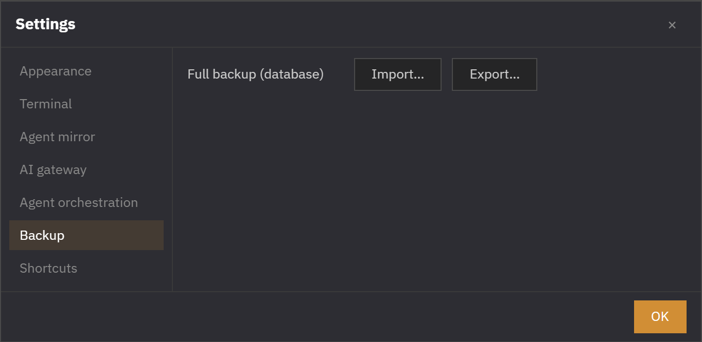

More · System · Storage · Backup
Storage · Backup
Settings, workspace, and to-dos are all saved automatically in one place. Nothing breaks if the app shuts down mid-use, it's backed up automatically every day, and you can export and import all your settings as a single file — there's nothing to manage by hand.
Everything saved in one file
All state — settings, your open Spaces and tabs, and to-dos — is held in a single file, orchterm.db, inside the data folder. Development, release, and worktree builds each use their own separate folder so they never mix.
Automatic migration of old settings
If you were on an older version, the first boot of the new version moves your existing settings to the new store automatically in one go (settings, theme, Spaces, and to-dos all preserved). The original is left as settings.json.migrated, so there's nothing else to do.
Automatic backup · recovery
On every boot it leaves one backup for that day (keeping the 10 most recent) and checks that the storage file is intact. If corruption is found, it automatically recovers from the most recent healthy backup and lets you know.
.bak) is a clean single-file snapshot · ② if the check fails, it auto-recovers from the latest healthy backup.Full backup — export · import
From Settings → Backup you can export all your settings as a single file, or replace your current data wholesale from a backup file. Import isn't applied immediately; it's safely swapped in on the next restart.

.db file · ② Import = validated, then swapped only on restart..pre-import file so you can roll back.Data folder files
| File | Role |
|---|---|
orchterm.db | The storage file holding all settings, Spaces, and to-dos |
orchterm.db.bak.YYYY-MM-DD | A backup created daily — the 10 most recent are kept |
settings.json.migrated | The old settings original, preserved after migration |
orchterm.db.<stamp>.pre-import | The state just before import — for rollback |